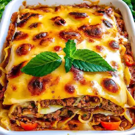

Receita de lasanha caseira

ingredientes
500g de massa para lasanha (pré-cozida, se disponível)
500g de carne moída (pode ser carne de boi, frango ou peru)
1 cebola grande, picada
3 dentes de alho, picados
800g de molho de tomate
2 xícaras de queijo muçarela ralado
1 xícara de queijo parmesão ralado
2 colheres de sopa de azeite de oliva
Sal e pimenta a gosto
Orégano a gosto
Folhas de manjericão fresco para decorar (opcional)
Passo a passo
Pré-aqueça o forno a 180°C.
Em uma frigideira grande, aqueça o azeite em fogo médio. Adicione a cebola picada e o alho, refogando até ficarem macios e levemente dourados.
Adicione a carne moída à frigideira e cozinhe até dourar completamente. Tempere com sal, pimenta e orégano a gosto.
Despeje o molho de tomate na frigideira com a carne e deixe ferver. Reduza o fogo e deixe cozinhando por cerca de 10 minutos, mexendo ocasionalmente.
Em uma forma para lasanha, espalhe uma camada fina de molho de carne no fundo.
Coloque uma camada de massa para lasanha sobre o molho na forma.
Espalhe uma camada generosa de molho de carne sobre a massa.
Polvilhe uma porção de queijo muçarela ralado sobre o molho.
Repita as camadas de massa, molho de carne e queijo muçarela até que todos os ingredientes sejam utilizados, terminando com uma camada de queijo muçarela por cima.
Polvilhe o queijo parmesão ralado sobre a última camada de queijo muçarela.
Cubra a forma com papel alumínio e leve ao forno pré-aquecido por cerca de 30 minutos.
Retire o papel alumínio e deixe assar por mais 10 minutos, ou até que o queijo esteja completamente derretido e dourado.
Retire do forno e deixe descansar por alguns minutos antes de cortar e servir.
Decore com folhas de manjericão fresco, se desejar.